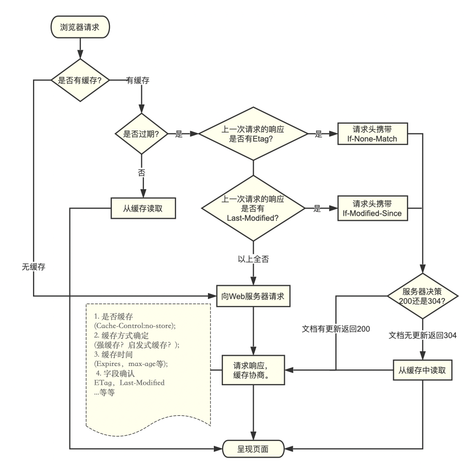

概念
缓存是一种保存资源副本并在下次请求时直接使用该副本的技术，当web缓存发现请求的资源已经被存储，就会拦截当前请求，返回该资源的副本，而不会去源服务器重新下载
Notes
- 对于网站来说，缓存是使网站达到高性能的重要组成部分。
- 缓存需要合理配置，因为不是所有的资源都是永久不变的。
- 对一个资源的缓存应截止到其下一次发生改变（不能缓存过期的资源）
好处
使用缓存资源能够有效的提升网站与应用的性能。web站点借助HTTP缓存，能够减少网络延迟与阻塞，进而提高网站访问速度，使之变得更具有响应性。并且可以减少服务器的压力。
分类
私有缓存，共享缓存，网关缓存，反向代理缓存，负载均衡器，浏览器缓存
共享缓存
共享缓存存储的响应能够被多个用户使用，例如，ISP(Internet Service Provider)或公司可能会架设一个web代理来作为本地网络基础的一部分提供给用户。这样热门的资源就会被重复使用，减少网络拥堵与延迟。
1 | Cache-Control: public |
私有缓存
只为单个用户服务
1 | Cache-control: private |
网关缓存（部署在服务器）
网关（Gateway）是转发其他服务器通信数据的服务器（不能过滤信息），与代理的动作机制类似。接收从客户端发送来的请求时，它就像自己拥有资源的源服务器一样对请求进行处理。
网关还能使通信线路上的服务器提供非HTTP协议服务，实现不同通信协议，数据格式或语言，甚至体系结构完全不同的网络之间的相互通信
CDN（详见网络相关，部署在服务器）
CDN（Content delivery networks）将用户的请求导向到离用户最近的服务节点上，解决因分布，带宽，服务器性能带来的访问延迟问题，适用于站点加速，点播，直播等场景。
反向代理缓存（部署在服务器）
代理服务器是浏览器和源服务器之间的中间服务器，浏览器在请求时，实际会先通过这个中间服务器的处理（权限验证，缓存匹配等），再将请求转发到源服务器。
缓存原理和浏览器端类似，但规模要大得多，可以将其理解为一个共享缓存，一般是为成千上万的用户提供缓存机制，因此在减少相应时间和带宽使用方面很有效，大公司和大型的ISP提供商通常会将它们设立在防火墙上或是作为一个独立的设备来运营。
负载均衡器（部署在服务器）
用来在多个计算机，网络连接，cpu，磁盘驱动器或其他资源中分配负载，以达到最优化资源使用，最大吞吐率，最小化响应时间，同时避免过载的目的。
满足的条件：确保所选择的服务器可以处理此次的请求。根据预先配置的规则从健康的服务器池中进行选择
浏览器缓存
Memory Cache
将资源缓存到内存中，是一个短期缓存，一般随着进程结束而清除
Memory Cache命中除了URL，还要有相同的资源类型，CORS模式以及一些其他特性
Notes
Memory Cache不关心HTTP语义，比如Cache-Control: max-age=0的资源在同一个导航中仍然会被重用- 在特定情况下，
Memory Cache会遵守Cache-Control: no-store
##### Disk Cache（HTTP Cache）
缓存存储在硬盘，读取速度比内存慢，但是胜在容量和存储时效上。
持久化，允许跨session甚至是跨站点地重用。
遵循HTTP语义，由响应头决定资源是否是最新的，是否需要验证以及是否应该缓存
Notes
- 一种情况外不遵守HTTP语义，即通过预抓取的资源或者浏览器其他内部逻辑的资源，会保留到下个导航
Push Cache
HTTP2推送资源存储的地方，是HTTP2会话的一部分，当HTTP会话结束了，储存在其中的资源都会消失。
不同的会话发起的请求不会命中Push Cache中的资源，所有未被使用的资源在Push Cache会储存优先的时间（Chromium浏览器大约5分钟）。
Push Cache根据请求的URL以及请求表头来匹配资源，但是不是严格遵守HTTP语义的。
如果一个请求命中了Push Cache里的资源，那么这个资源将会从Push Cache里移除，然后经过HTTP Cache时，会保留一份拷贝缓存下来，再经过Service Worker（如果有）时，也会保留一份拷贝储存下来，最后请求的资源回到渲染引擎时，Memory Cache会存储一份对该资源的引用，如果将来本导航会话中有相同的资源请求，这份引用就可以直接被分配给该请求
缓存操作的目标
常见的HTTP缓存只能存储GET响应，缓存的关键主要包括request method和目标URI
缓存案例
- 一个检索请求的成功响应: 对于
GET请求，响应状态码为：200，则表示为成功。一个包含例如HTML文档，图片，或者文件的响应。 - 永久重定向: 响应状态码：
301。 - 错误响应: 响应状态码：
404的一个页面。 - 不完全的响应: 响应状态码
206，只返回局部的信息。 - 除了
GET请求外，如果匹配到作为一个已被定义的cache键名的响应。
缓存相关 header
Pragma
是HTTP/1.0标准中定义的一个header属性，效果依赖于不同的实现，所以在请求-响应链中会有不同的效果，它用来向后兼容只支持HTTP/1.0协议的缓存服务器。
pragma: no-cache
与Cache-control：no-cache一致，强制要求缓存服务器在使用缓存时先将请求提交到源服务器进行验证
Expries
响应头包含日期/时间， 即在此时候之后，响应过期。
无效的日期，比如 0, 代表着过去的日期，即该资源已经过期。
如果在Cache-Control响应头设置了max-age或者s-max-age指令，那么 Expires 头会被忽略。
1 | //也可以在html头部 |
Cache-control
请求指令
-
max-age=<seconds>： 设置缓存存储的最大周期，超过这个时间缓存被认为过期（秒），与Expires相反，时间是相对于请求的时间。
某些浏览器（比如Firefox）中如果设定为永不缓存，那么其发出的请求中，请求头会包含
max-age=0。 -
max-stale=<seconds>： 客户端愿意接受一个过期的资源，可选的设置一个时间（单位秒），表示响应不能超过的过时时间。
-
min-fresh=<seconds>： 客户端在指定的时间内获取最新的响应
-
no-cache
-
no-store
-
no-transform
-
Only-if-cahced：客户端只接受已缓存的响应，并且不要向原始服务器检查是否有更新的拷贝，cache要么用缓存的内容给出响应，要么给出一个504（GateWay Timeout）响应码。如果一组cache被作为一个内部相连的系统，那么其中的某个成员可以向这个缓存组里请求响应。
响应指令
- must-revalidate： 缓存必须在使用前验证旧资源的状态，并且不可使用过期资源
- no-cache： 在释放缓存副本之前，强制高速缓存将请求提交给原始服务器进行验证
- no-store：缓存不应存储有关客户端请求或服务器响应的任何内容。
- no-transform：不得对资源进行转换或转变。
Content-Encoding,Content-Range,Content-Type等HTTP头不能由代理修改。例如，非透明代理可以对图像格式进行转换，以便节省缓存空间或者减少缓慢链路上的流量。no-transform指令不允许这样做。 - Public: 响应可以被任何对象（发送请求的客户端，代理服务器等）缓存
- private：响应只能被单个用户缓存，不能作为共享缓存（代理服务器不能缓存它），可以缓存响应内容
- max-age=<seconds>： 设置缓存存储的最大周期，超过这个时间缓存被认为过期（秒），与Expires相反，时间是相对于请求的时间。
- proxy-revalidate： 与
must-revalidate作用相同，但它仅适用于共享缓存（例如代理），并被私有缓存忽略。 - s-maxage=<seconds>：覆盖
max-age或者Expries头。但是仅用于共享缓存（比如各个代理），私有缓存会被忽略
拓展指令
- immutable：表示响应正文不会随时间而改变。资源（如果未过期）在服务器上不发生改变，因此客户端不应发送重新验证请求头（例如
If-None-Match或If-Modified-Since）来检查更新，即使用户显式地刷新页面。 - stale-while-revalidate=<seconds>：客户端愿意接受陈旧的响应，同时在后台异步检查新的响应，秒值表示客户端愿意接受陈旧响应的时间
- stale-if-error=<seconds>: 表示如果新的检查失败，则客户愿意接受陈旧的响应。秒数值表示客户在初始到期后愿意接受陈旧响应的时间。
If-Modified-Since(HTTP/1.0) / Last-Modified(HTTP/1.0) /If-Unmodified-Since
Last-Modified
响应首部，包含源服务器认定的资源修改的日期及时间。 通常被用作一个验证器来判断接收到的和存储的资源是否彼此一致。由于精确度比ETag要低，经常作为一个备用机制。包含有If-Modified-Since或If-Unmodified-Since首部的条件请求会使用这个字段。
If-Modified-Since
条件式请求首部，服务器只在所请求的资源在给定的日期时间之后对内容进行过修改的情况下才会将资源返回，状态码为200 。否则返回一个不带有消息主体的304 响应，在Last-Modified首部中带有上次修改时间。 不同于If-Unmodified-Since, If-Modified-Since 只可以用在GET或HEAD请求中。
当与If-None-Match一同出现时，会被忽略掉，除非服务器不支持 If-None-Match。
最常见的应用场景是来更新没有特定ETag标签的缓存实体。
If-Unmodified-since
请求首部，使得当前请求成为条件式请求：只有当资源在指定的时间之后没有进行过修改的情况下，服务器才会返回请求的资源。或是接受POST或其他non-safe方法的请求。如果所请求的资源在指定的时间之后发生了修改，那么会返回412(Precondition Failed/先决条件失败）错误。
常见的应用场景有两种：
- 与
non-safe方法如POST搭配使用，可以用来优化并发控制，例如在某些wiki应用中的做法：假如在原始副本获取之后，服务器上所存储的文档已经被修改，那么对其作出的编辑会被拒绝提交。 - 与含有
If-Range消息头的范围请求搭配使用，用来确保新的请求片段来自于未经修改的文档。
Notes
- 本地打开缓存文件但是没有修改也会更新
last-modified的时间 last-modified以秒计时，在一秒内做了更改last-modified不会做出更新
If-Match/If-None-Match/ETag
If-Match
请求首部。在请求方法为GET和HEAD的情况下，服务器仅在请求的资源满足此首部列出的 ETag之一时才会返回资源。而对于PUT或其他非安全方法来说，只有在满足条件的情况下才可以将资源上传。
ETag存储比较使用的是强比较算法，即只有在每一个比特都相同的情况下，才认为两个文件是相同的。采用相对宽松的算法可以在ETag前面添加W/。
两个常见的应用场景：
- 对于
GET和HEAD方法，搭配Range首部使用，可以用来保证新请求的范围与之前请求的范围是对同一份资源的请求。如果 ETag 无法匹配，那么需要返回416(Not Satisfiable，范围请求无法满足) 响应。 - 对于其他方法来说，尤其是
PUT,If-Match首部可以用来避免更新丢失问题。它可以用来检测用户想要上传的不会覆盖获取原始资源之后做出的更新。如果请求的条件不满足，那么需要返回412(Precondition Failed，先决条件失败) 响应。
If-None-Match / Etag(http1.1)
请求首部。对于GET和HEAD请求方法来说，当且仅当服务器上没有任何资源的ETag属性值与这个首部中列出的相匹配的时候，服务器端会才返回所请求的资源，响应码为200 。对于其他方法来说，当且仅当最终确认没有已存在的资源的ETag属性值与这个首部中所列出的相匹配的时候，才会对请求进行相应的处理。
对于GET和HEAD方法来说，当验证失败的时候，服务器端必须返回响应码 304（Not Modified，未改变）。对于能够引发服务器状态改变的方法，则返回 412 （Precondition Failed，前置条件失败）。
Notes
服务器端在生成状态码为 304 的响应的时候，必须同时生成以下会存在于对应的 200 响应中的首部：Cache-Control、Content-Location、Date、ETag、Expires 和 Vary。
ETag属性之间的比较采用的是弱比较算法，即两个文件除了每个比特都相同外，内容一致也可以认为是相同的。例如，如果两个页面仅仅在页脚的生成时间有所不同，就可以认为二者是相同的。
当与If-Modified-Since一同使用的时候，If-None-Match优先级更高（假如服务器支持的话）。
以下是两个常见的应用场景：
- 采用
GET或HEAD方法，来更新拥有特定的ETag属性值的缓存。 - 采用其他方法，尤其是
PUT,将If-None-Matchused 的值设置为 * ，用来生成事先并不知道是否存在的文件，可以确保先前并没有进行过类似的上传操作，防止之前操作数据的丢失。这个问题属于更新丢失问题的一种。
ETag
HTTP响应头是资源的特定版本的标识符。这可以让缓存更高效，并节省带宽，因为如果内容没有改变，Web服务器不需要发送完整的响应。而如果内容发生了变化，使用ETag有助于防止资源的同时更新相互覆盖（“空中碰撞”）。
语法
1 | ETag: W/"<etag_value>" |
指令
-
W/可选'W/'(大小写敏感) 表示使用弱验证器。 弱验证器很容易生成，但不利于比较。 强验证器是比较的理想选择，但很难有效地生成。 相同资源的两个弱Etag值可能语义等同，但不是每个字节都相同。 -
“<etag_value>”
实体标签唯一地表示所请求的资源。 它们是位于双引号之间的ASCII字符串（如“675af34563dc-tr34”）。 没有明确指定生成ETag值的方法。 通常，使用内容的散列，最后修改时间戳的哈希值，或简单地使用版本号。 例如，MDN使用wiki内容的十六进制数字的哈希值。
###缓存机制
新鲜度
理论上来讲，当一个资源被缓存存储后，该资源应该可以被永久存储在缓存中。由于缓存只有有限的空间用于存储资源副本，所以缓存会定期地将一些副本删除，这个过程叫做缓存驱逐。另一方面，当服务器上面的资源进行了更新，那么缓存中的对应资源也应该被更新，由于HTTP是C/S模式的协议，服务器更新一个资源时，不可能直接通知客户端及其缓存，所以双方必须为该资源约定一个过期时间，在该过期时间之前，该资源（缓存副本）就是新鲜的，当过了过期时间后，该资源（缓存副本）则变为陈旧的*。*驱逐算法用于将陈旧的资源（缓存副本）替换为新鲜的，注意，一个陈旧的资源（缓存副本）是不会直接被清除或忽略的，当客户端发起一个请求时，缓存检索到已有一个对应的陈旧资源（缓存副本），则缓存会先将此请求附加一个If-None-Match头，然后发给目标服务器，以此来检查该资源副本是否是依然还是算新鲜的，若服务器返回了304 (Not Modified)（该响应不会有带有实体信息），则表示此资源副本是新鲜的，这样一来，可以节省一些带宽。若服务器通过If-None-Match或If-Modified-Since判断后发现已过期，那么会带有该资源的实体内容返回。
图示

对于含有特定头信息的请求，会去计算缓存寿命。比如Cache-control: max-age=N的头，相应的缓存的寿命就是N。通常情况下，对于不含这个属性的请求则会去查看是否包含Expires属性，通过比较Expires的值和头里面Date属性的值来判断是否缓存还有效。如果max-age和expires属性都没有，可以去找响应头里的Last-Modified信息。如果有，缓存的寿命就等于头里面Date的值减去Last-Modified的值除以10（注：根据rfc2626其实也就是乘以10%）
缓存失效时间计算公式如下：
1 | expirationTime = responseTime + freshnessLifetime - currentAge |
responseTime 表示浏览器接收到此响应的那个时间点
强制缓存
对于强制缓存，服务器响应头中会用Expires和Cache-Control来表明。
当缓存生效时直接使用，否则进行协商缓存
协商缓存
又称对比缓存，客户端在请求时头部携带If-Modified-Sincea/If-None-Match，在后端检验后，文件没有发生改变，服务端会返回304，此时客户端直接从缓存中获取所请求的数据，如果标识失效，服务端会返回更新后的数据。
Notes
两类缓存机制可以同时存在，强制缓存的优先级高于协商缓存，当执行强制缓存时，如若缓存命中，则直接使用缓存数据，不在进行缓存协商。
启发式缓存阶段
1 | Age:23146 |
触发：当响应字段没有标注过期时间
根据响应头中2个时间字段 Date 和 Last-Modified 之间的时间差值，取其值的10%作为缓存时间周期。
整体流程图
Vary
响应头部信息，它决定了对于未来的一个请求头，应该用一个缓存的response还是向源服务器请求一个新的回复。它被服务器用来表明在内容协商算法中选择一个资源代表的时候应该使用哪些头部信息
在响应状态码为 304(Not Modified) 的响应中，也要设置Vary 首部，而且要与相应的200响应设置得一模一样。
当服务器收到一个请求，只有当前的请求和原始（缓存）的请求头跟缓存的响应头里的Vary都匹配，才能使用缓存的响应。
1 | Vary: User-Agent |
哪种情况下使用Vary: 对于User-Agent头部信息，例如你提供给移动端的内容是不同的，可用防止你客户端误使用了用于桌面端的缓存。 并可帮助Google和其他搜索引擎来发现你的移动端版本的页面，同时告知他们不需要Cloaking。
再比如，源服务器启用了gzip压缩，但用户使用了比较旧的浏览器，不支持压缩，缓存服务器如何返回？就可以这么设定：
1 | Vary: Accept-Encoding |
当然，也可以这么用：
1 | Vary: User-Agent, Accept-Encoding |
这意味着缓存服务器会以User-Agent和 Accept-Encoding两个请求首部字段来区分缓存版本。根据请求头里的这两个字段来决定返回给客户端什么内容。
Age
资源在缓存服务器存在的时长，Cache-Control: max-age=[秒]就是Age的最大值。
可以结合date字段来判断请求的资源来自源服务器还是缓存服务器
Date
报文创建的时间
如果按F5频繁刷新发现响应里的Date没有改变，就说明命中了缓存服务器的缓存。例子：
1 | //response |
上图Age=44，说明这个资源已经在缓存服务器存在了44秒。如果文件被修改或替换，Age会重新由0开始累计。
Age消息头的值通常接近于0。表示此消息对象刚刚从原始服务器获取不久；其他的值则是表示代理服务器当前的系统时间与此应答消息中的通用消息头 Date的值之差。
用户操作行为对缓存的影响
以谷歌为准
| 操作 | 说明 |
|---|---|
| 打开新窗口 | 如果值为private或must-revalidate，则只有第一次访问时会访问服务器,以后就不再访问。如果值为no-cache,那么每次都会访问。如果值为max-age,则在过期之前不会重复访问。 |
| 在地址栏回车 | 如果指定cache-control的值为private、no-cache、must-revalidate，max-age=0。那么打开新窗口访问时都会重新访问服务器。而当max-age不为0,那么在此值内的时间里就不会重新访问服务器,例如：Cache-control: max-age=5 表示当访问此网页后的5秒内不会去再次访问服务器. |
| 按后退按扭 | 如果值为private、must-revalidate、max-age,则不会重访问,而如果为no-cache,则每次都重复访问. |
| 按刷新按扭 | 无论为何值,去查一下缓存是否过期.（可能返回状态码：200、304，这个不同浏览器处理是不一样的，FireFox正常，Chrome则会启用缓存(200 from cache)） |
| 按强制刷新按钮 | 当做首次进入重新请求(返回状态码200) |
关于缓存的一些问答
1. 问题：请求被缓存，导致新代码未生效
- 服务端响应添加
Cache-Control:no-cache,must-revalidate指令； - 修改请求头
If-modified-since:0或If-none-match； - 修改请求URL，请求URL后加随机数，随机数可以是时间戳，哈希值
2. 问题：服务端缓存导致本地代码未更新
- 合理设置Cache-Control:s-maxage指令；
- 设置Cache-Control:private指令，防止代理服务器缓存资源；
- CDN缓存可以使用管理员设置的缓存刷新接口进行刷新；
3. 问题： Cache-Control: max-age=0 和 no-cache有什么不同
max-age=0和no-cache应该是从语气上不同。max-age=0是告诉客户端资源的缓存到期应该向服务器验证缓存的有效性。而no-cache则告诉客户端使用缓存前必须向服务器验证缓存的有效性。